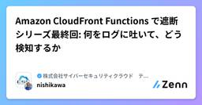
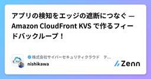
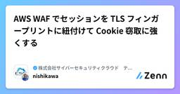

株式会社サイバーセキュリティクラウド テックブログのフィード
https://zenn.dev/p/cscloud_blog
「世界中の人々が安心安全に使えるサイバー空間を創造する」 この理念を掲げ、世界有数のサイバー脅威インテリジェンスとAI技術を活用した、WEBアプリケーションのセキュリティサービスを全世界に向けて提供しています。
フィード

Amazon CloudFront Functions で遮断シリーズ最終回: 何をログに吐いて、どう検知するか
株式会社サイバーセキュリティクラウド テックブログのフィード
どうもセキュリティ大好きおじさんの西川です。前回、「アプリで検知 → エッジで遮断」のフィードバックループを作りました。ただ肝心の「アプリでどう検知するか」については言及していませんでした。そこを話さないと実際どうやったらいいかわからないという人も多いのではないでしょうか。ということで今回は何をログに吐き、どういったクエリで拾い、どうスコア化して KVS に登録するかを、コード含めてお伝えしたいと思います。前提として単一シグナルでの即 BAN はしません。1つの兆候だけで BAN すると過検知してしまうことが多いです。複数のシグナルをスコアとして足し合わせ、閾値に応じて chall...
15時間前

[社内勉強会資料公開] Claude Code 入門 #2 — 基本操作とコンテキスト管理
株式会社サイバーセキュリティクラウド テックブログのフィード
こんにちは、CSC の CloudFastener というプロダクトで TAM のポジションで働いている平木です！CSC社内で開催している「CloudFastener の TAM(テクニカルアカウントマネージャー)向けに、Claude Codeを初歩から実践まで学ぶ勉強会」の第2回資料です。第1回では、Claude Codeが「ハーネス」であることを理解し、インストール・ログインを済ませて最初の一往復を体験しました。https://zenn.dev/cscloud_blog/articles/csc-claude-code-study-session-01第2回は、日常的に使うス...
4日前

アプリの検知をエッジの遮断につなぐ — Amazon CloudFront KVS で作るフィードバックループ！
株式会社サイバーセキュリティクラウド テックブログのフィード
どうもセキュリティ大好きおじさんの西川です。そろそろ浸透してきた頃でしょうか。Bot 対策には非対称な構造があります。検知が一番しやすいのはアプリです。「このアカウントに5分で30回ログイン失敗している」「この順番で API を叩くのは人間の導線ではない」といったコンテキストはアプリしか知らないからです。一方で遮断が一番簡単なのはエッジです。オリジンに到達する前に不正なリクエストを打ち落とすことができれば無駄にリソースを使うこともないですし、不必要なログも吐かれません。ということで今回はこの2つをつなぐ「アプリで検知 → エッジで遮断」のフィードバックループを、AWS WAF...
4日前

Cognitoでユーザーを作るだけでブラウザからClaude Codeを触れる勉強会用サンドボックスを作った話
株式会社サイバーセキュリティクラウド テックブログのフィード
こんにちは、CSC の CloudFastener というプロダクトで TAM のポジションで働いている平木です！Claude Code の社内勉強会をやるにあたって、「参加者に Claude Code を触ってもらいたいが、人によってはすぐに Anthropic のモデルにアクセスするための環境を用意できる人とできない人がいる」という課題がありました。そこで、Cognito でユーザーを1人作成するだけで、ブラウザからそのままターミナル操作で Claude Code を使える使い捨てのサンドボックス環境を作り、GitHub で公開しました。https://github.com/K...
4日前

Azure 環境を Prowler と連携してセキュリティアセスメントを実施してみた
株式会社サイバーセキュリティクラウド テックブログのフィード
こんにちは、CSC の CloudFastener というプロダクトで TAM のポジションで働いている平木です！普段は AWS を扱うことが多いのですが、今回 Azure 環境をクラウドセキュリティ監査OSS「Prowler」でスキャンする機会がありましたので備忘録がてら投稿しました。!この記事の3行まとめAzure 環境を Prowler でスキャンする場合には --sp-env-auth / --az-cli-auth / --browser-auth / --managed-identity-auth の4つの認証方式がある「ユーザーを払い出してもらう」運用では --...
4日前

AWS WAF でセッションを TLS フィンガープリントに紐付けて Cookie 窃取に強くする
株式会社サイバーセキュリティクラウド テックブログのフィード
どうもセキュリティ大好きおじさんの西川です。さてみなさんセッションハイジャックの対策していますか？セッション Cookie を盗まれたら基本的には終わり、というのが多くの Web アプリの現実だと思います。infostealer 型のマルウェアが Cookie ごと抜いていく昨今、「Cookie の所持 = 本人」という前提は少しずつ崩れてきているように思います。本記事では、AWS WAF の動的ラベル補間で JA4 TLS フィンガープリントをアプリに渡し、セッションと TLS フィンガープリントを紐付ける（session binding） 構成を紹介したいと思います。これで C...
8日前

LLMを組み込むと、アーキテクチャ特性はどう変わるか？ —『ソフトウェアアーキテクチャの基礎』を読んで
株式会社サイバーセキュリティクラウド テックブログのフィード
自己紹介ジェヒョンと申します。韓国出身で、日本が大好きで東京に就職し、ITエンジニアとして楽しく働いています。今年で3年目になります。 はじめにこんにちは、株式会社サイバーセキュリティクラウド SIDfm開発グループのジェヒョンです。弊社では社内での勉強会や輪読会がとても活発に行われていて、私もその一環として、3ヶ月ほどかけて 『ソフトウェアアーキテクチャの基礎 第2版』 の輪読会に参加しました。https://www.oreilly.co.jp/books/9784814401550/この本は、アーキテクチャを決めるうえで考慮すべきことを幅広く押さえてくれる一冊で、...
9日前
AWS WAF の動的ラベル補間で過検知に強いチャレンジ基盤を作る
株式会社サイバーセキュリティクラウド テックブログのフィード
どうもセキュリティ大好きおじさんの西川です。2026 年 5 月に AWS WAF に動的ラベル補間（dynamic label interpolation）という機能が追加されました。ご存じでしたか？一見すると「これ何につかえばいいの？」となりがちですが、Bot 対策の運用で一番つらい「過検知への対応」を仕組みで解決できる良い機能だと思っています。今回はこの機能を使って「Bot として誤検知されてしまったユーザーが自力で報告・復帰できる"チャレンジ基盤"」を作る話をします。前回の記事で書いた「JA4H で検知して即ブロックせずチャレンジページへ誘導する」構成の発展形ですが、この記...
10日前
[社内勉強会資料公開] Claude Code 入門 #1 — AI エージェントの仕組みとセットアップ
株式会社サイバーセキュリティクラウド テックブログのフィード
こんにちは、CSC の CloudFastener というプロダクトで TAM のポジションで働いている平木です！CSC社内で「CloudFastener の TAM(テクニカルアカウントマネージャー)向けに、Claude Codeを初歩から実践まで学ぶ勉強会」を始めることになり、その資料を社外にも公開します。セキュリティコンサルティングの現場でもAIエージェントの活用が広がりつつある一方、「触ったことはあるけれど、仕組みまでは理解していない」という方も多いのではないでしょうか。この勉強会では、そうした方を対象に、Claude Codeを題材にしてAIエージェントの基礎から実践まで...
11日前
Amazon CloudFront Functions で JA4H 相当のフィンガープリントを実装して Bot アクセスを防ぐ
株式会社サイバーセキュリティクラウド テックブログのフィード
どうもセキュリティ大好きおじさんの西川です。Bot 対策やクライアント識別の文脈で、JA3/JA4 フィンガープリントを見かける機会が増えてきました。Amazon CloudFront は TLS ベースの JA4 をマネージドヘッダーとして提供していますが、HTTP リクエストベースの JA4H は提供していません。「それなら CloudFront Functions で自前実装すればいいのでは？」と思って実際にやってみた話です。実装するに当たって気をつけなければいけない点とか考慮すべき点があるのでその点もお伝えできればと思います。 JA4 とはJA4+ は FoxIO が公...
11日前
SREは"職種"ではなく"実践"、エンジニアの枠を越えてプラクティスを広げた話｜SRE NEXT 2026登壇レポート
株式会社サイバーセキュリティクラウド テックブログのフィード
はじめにこちらは会社のテックブログなので、SRE NEXT 2026のセッション登壇内容にフォーカスした話を記載します。個人目線での所感やminiLTの内容などは以下の記事をご覧ください。https://zenn.dev/yuta_k0911/articles/d1b3ac24930665 イベント概要SRE NEXT 2026は7/10（金） - 11（土）の2日間開催された日本で最大級とも言えるSREに関するカンファレンスです。形式はオフライン・オンラインのハイブリッドでして、毎年1,000名以上が参加しています。今年のテーマは「Inclusive SRE」。SR...
12日前
Inspector の新しい EC2 スキャンエンジン「VM Scanner」によってエージェントベーススキャンが強化されました！
株式会社サイバーセキュリティクラウド テックブログのフィード
こんにちは、CSC の CloudFastener というプロダクトで TAM のポジションで働いている平木です！皆さんは Inspector を使用してAWSの脆弱性管理をしていますか？ふと Amazon Inspector の画面を見たところ以下のような表示が出ている事に気づきました。どのようなアップデートか確認してみたところ、EC2 スキャンに、新しいスキャンエンジン「Amazon Inspector VM Scanner」が登場していました。https://aws.amazon.com/jp/about-aws/whats-new/2026/05/amazon-insp...
15日前
AWS Security HubでAzureの環境も監視できるようになったので連携の構造や何が嬉しいのかをまとめてみた
株式会社サイバーセキュリティクラウド テックブログのフィード
こんにちは、CSC の CloudFastener というプロダクトで TAM のポジションで働いている平木です！皆さんはマルチクラウドで運用していますか？昨日、「AWS Security Hub は、統合セキュリティ管理を Microsoft Azure に拡張します。」というアップデートが発表されました。https://aws.amazon.com/jp/about-aws/whats-new/2026/06/aws-security-hub-supports-monitoring-microsoft-azure/マルチクラウド環境のセキュリティ統制に長年課題を感じてきた方で...
16日前
Amazon CloudFront + Lambda@Edge でアプリ無改修の Impossible Location 検知の実装
株式会社サイバーセキュリティクラウド テックブログのフィード
セッションが漏洩したとき攻撃者はどこからアクセスしてくるでしょうか。XSS などでセッション Cookie を窃取された場合、攻撃者はそれを自分のブラウザにセットするだけで被害者になりすますことができ、攻撃者は多くの場合、正規ユーザーとは異なる国や全く異なるネットワーク環境からアクセスを行います。「Impossible Location（ありえない場所）」とは、セキュリティの世界で使われる概念です。東京でログインしたユーザーが5分後にニューヨークからアクセスしてきたとしたら、それは物理的に不可能な移動ですからセッションハイジャックの可能性が高いです。これを自動検知してブロックする仕組み...
18日前
Amazon CloudFront Functions + KVS で Impossible Location 検知の実装
株式会社サイバーセキュリティクラウド テックブログのフィード
こんにちはセキュリティ大好きおじさんの西川です。これは Amazon CloudFront + Lambda@Edge でアプリ無改修の Impossible Location 検知の実装 の CloudFront Functions + KVS バージョンです。Lambda@Edge 編を読んでから本記事をお読みいただくとより内容をご理解いただけるかと思います。 なぜ CloudFront Functions なのか前回の Lambda@Edge 編 では、アプリ無改修で Impossible Location 検知を実現しました。一方で Lambda@Edge には以下の制...
18日前
JavaScriptの 0.1 + 0.2 !== 0.3、Math.sumPrecise に期待したら、解決される問題が少し違った話
株式会社サイバーセキュリティクラウド テックブログのフィード
前提知識ES2026は、JavaScriptの標準仕様であるECMAScriptの2026年版です。ECMAScriptは毎年更新されており、TC39で仕様化が進んだ提案が各年のバージョンに反映されます。毎年TC39という技術委員会が仕様を管理しており、Stage 4（2つ以上のエンジンで実装完了＋テスト通過＋仕様PR提出まで完了した状態）に達した提案が新バージョンに反映されます。今回紹介するMath.sumPreciseは2025年7月にStage 4へ到達し、ES2026に含まれる機能として扱われています。自己紹介株式会社サイバーセキュリティクラウド SIDfm開...
19日前
AWS Summit Japan 2026に初参加！セキュリティ系セッションで感じた学びと気付き
株式会社サイバーセキュリティクラウド テックブログのフィード
はじめにこんにちは、日々クラウドセキュリティ業務に従事している新卒2年目です。先日、「AWS Summit Japan 2026」のDay2に初めて参加してきました。本記事では、当日の会場の雰囲気やセキュリティ系セッションを聴講して感じたことをまとめます。聴講したセッションはセキュリティ系が中心です。 イベント概要イベント名：AWS Summit Japan 2026開催日：2026年6月25日, 26日開催場所：幕張メッセhttps://aws.amazon.com/jp/events/summits/japan/ 会場に着いてみて会場の最寄駅である海...
21日前
Security Hub CSPM に新しいセキュリティ標準の「AI Security Best Practices v1.0.0」が登場
株式会社サイバーセキュリティクラウド テックブログのフィード
こんにちは、CSC の CloudFastener というプロダクトで TAM のポジションで働いている平木です！AI ワークロードを AWS 上で構築するとき、各サービスのセキュリティ設定を網羅的に確認するのは意外と手間がかかります。SageMaker ノートブックのインターネットアクセス設定、Bedrock データソースへのカスタマー管理 KMS キーの適用、Bedrock AgentCore ゲートウェイの認証設定といった項目を、個別にドキュメントを調べながら確認する必要がありました。2026年7月1日、Security Hub CSPM にこうした確認を自動化する新しいセキ...
23日前
サイバーセキュリティクラウドにジョインして1年経ったので、この1年間を振り返ってみる
株式会社サイバーセキュリティクラウド テックブログのフィード
こんにちは、CSC の CloudFastener というプロダクトで TAM のポジションで働いている平木です！2025年7月にサイバーセキュリティクラウド（CSC）に入社してから、今日でちょうど1年が経ちました。振り返ってみると、個人のキャリア・AI の進化・サイバーセキュリティの情勢、いずれの面でも「あれからまだ1年しか経っていないのか」と時の流れの速さを実感させられる、密度の濃い日々でした。この記事では、この1年を3つのテーマで振り返ります。 サイバーセキュリティの一年 「あれからもう1年か」という感覚あれから約1年、と実感させられる出来事が続いています。入社し...
24日前
5年9か月ぶりの転職｜EM × DevHR × DevRel を一本でやる理由
株式会社サイバーセキュリティクラウド テックブログのフィード
まずは自己紹介川崎 雄太と申します！2026年7月1日に株式会社サイバーセキュリティクラウドへ入社しました！各種アカウントは以下をご覧ください。https://x.com/yuta_k0911https://www.linkedin.com/in/yutakawasaki0911/前職（ココナラ）では、SRE・社内情報システム・セキュリティのエンジニアリングマネージャーとして複数グループを統括し、技術広報やグループ会社の執行役員も担当していました。今回の転職のタイミングや経緯については、別記事で少し書いています。よろしければ、あわせてご覧ください。https://z...
24日前